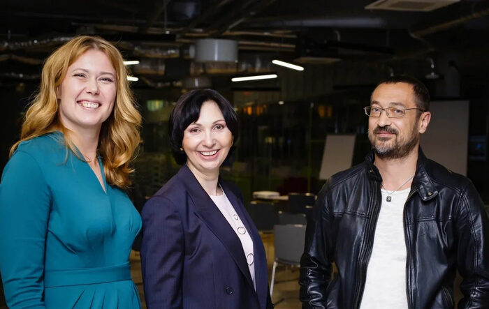

Ценностное предложение
Кому помогает проект и какую задачу решает.
Сопровождение импакт-проектов: ценностное предложение, бизнес-модель, экосистема и подготовка к общению с партнёрами и инвесторами.
Кому помогает проект и какую задачу решает.
Как устроены ценность, ресурсы и экономика.
Клиенты, партнёры, эксперты и инвесторы.
Презентация проекта и ясный разговор о его возможностях.

Здесь представлены программы и этапы их работы. Индивидуальные кейсы проектов с подтверждёнными результатами будут добавлены после получения материалов.

Президент ассоциации
Предприниматель, инвестор и просветитель. Издатель «Энциклопедии для детей Аванта+».

Вице-президент ассоциации
Методолог программ, консультант и ментор. Генеральный директор «Молтен Консалтинг», преподаватель МФТИ.
Обсудим аудиторию, задачу и подходящий формат сопровождения.
Новый набор проектов сейчас не объявлен. На этой странице можно предложить совместную программу от организации.
Контакты команды